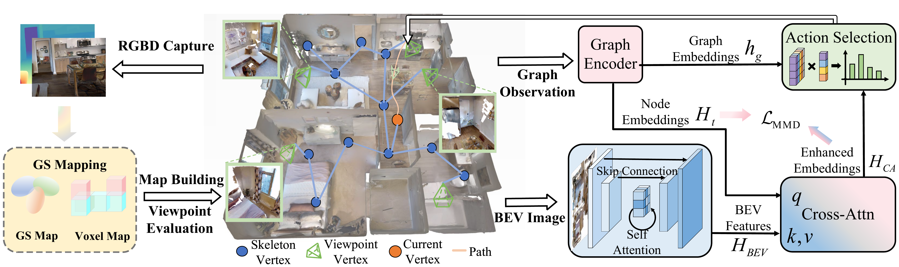

About
Research
First-author Work

DST-Planner: Diffusion-Augmented Sequential Topological Planning for Robotic Exploration in Complex Environments
IEEE Robotics and Automation Letters, 2026
A diffusion-augmented sequential topological planner for autonomous robotic exploration in complex environments.

Active Scene Reconstruction with Topological Reasoning and Semantic-Augmented Reinforcement Learning
Manuscript, 2026
A graph-based active scene reconstruction framework with 3D skeleton topology, BEV-augmented graph inference, and offline RL.
Other Work
Learning to Explore Efficiently: Heterogeneous Topological Graphs and Lightweight Global Reasoning for Robotic Exploration
IEEE Robotics and Automation Letters, 2025
GPTS-Nav: End-to-End Robot Navigation in Dynamic Environments with Graph-Privileged Teacher-Student Reinforcement Learning
IEEE Robotics and Automation Letters, 2026